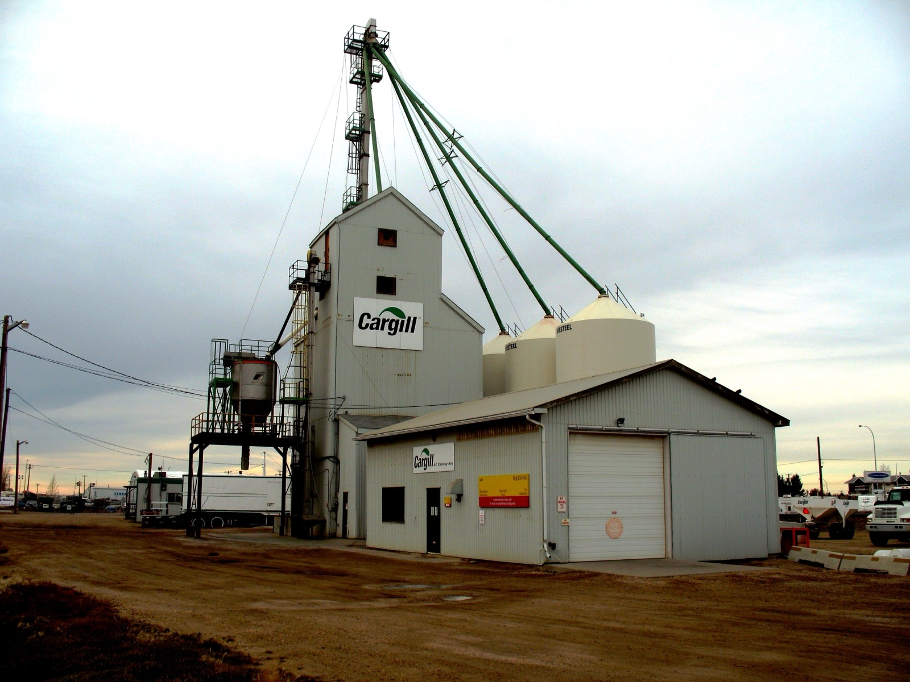
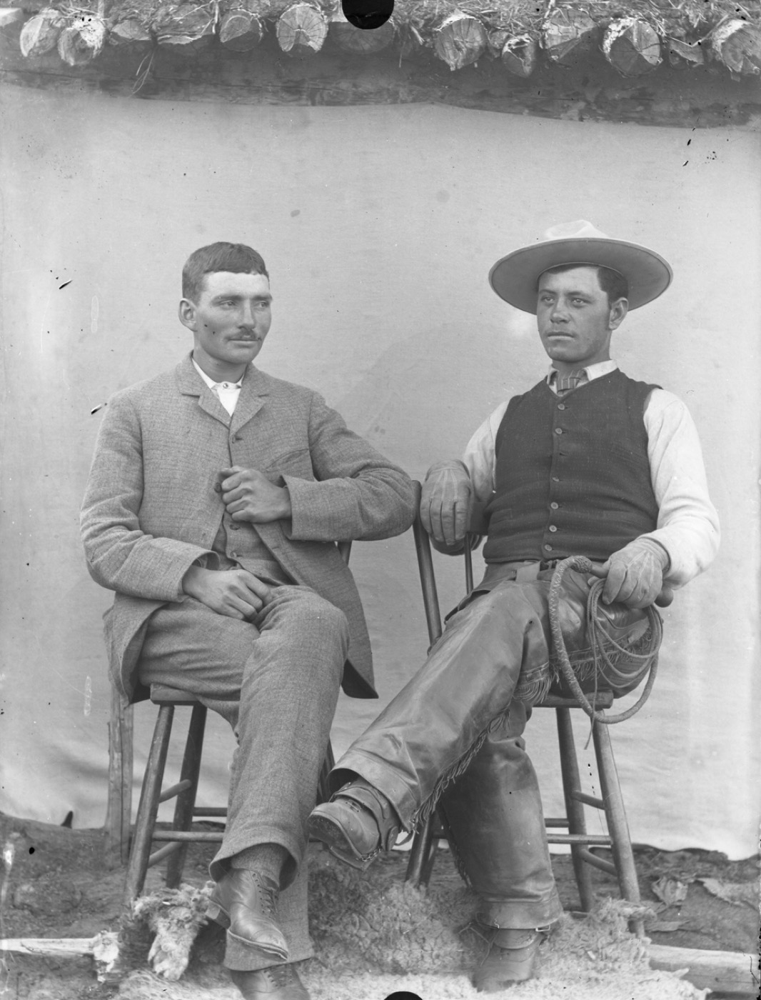
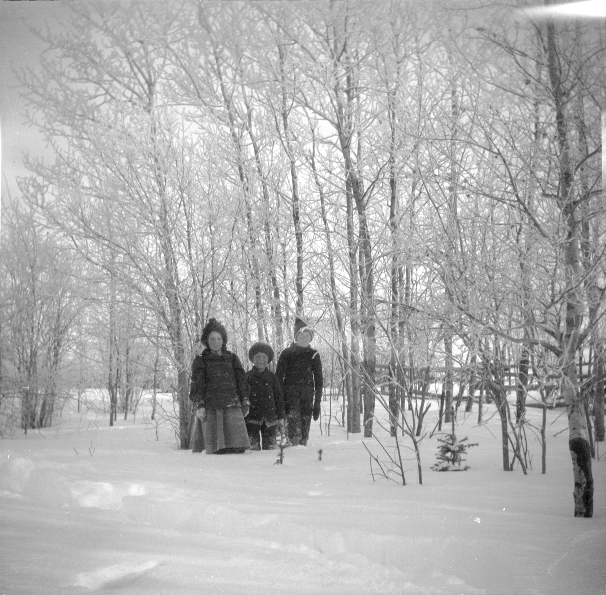

Missing
07
Confirmed absences with clip residue at last known position. No remains recovered.
INTERNAL FIELD DOCUMENT · NOT FOR PUBLIC CIRCULATION
PAPERCLIP
Restricted archive of the Spruce Grove object phenomenon — hereafter the Paper Clip Ghost — including psychiatric collapse, unexplained disappearance, and material recovered after contact.
01 — Phenomenon
It begins with metal. It ends with absence.
The Paper Clip Ghost is not a figure walking halls. Witnesses who survive long enough to be interviewed describe something colder: ordinary wire fasteners appearing where none were stored — then multiplying — then arranging — then, in the worst cases, replacing the person who noticed them.
Early contact is almost always dismissed. A clip on a nightstand. Three in a shoe. A line of them along a windowsill at 3:11 a.m. Within days, recipients report a metallic taste that will not rinse out, sleeplessness, and the conviction that something is counting them. Within weeks, some begin speaking only in unfinished sentences. Within months, a subset vanish from locked rooms, leaving behind nothing but a neat pile of clips where they last stood.
Spruce Grove’s rail corridor concentrates the pattern. The Alberta Wheat Pool elevator at 120 Railway Avenue, the CN right-of-way, and the industrial yards west of Main Street appear again and again in witness maps. Whatever this is, it prefers places built to store, sort, and move bulk material — as if people were inventory that finally got clipped shut.

02 — Casualties
Names withheld. Outcomes are not.
Missing
07
Confirmed absences with clip residue at last known position. No remains recovered.
Psychiatric
19
Documented breakdowns requiring intervention: insomnia, metal fixation, identity fracture.
Probable
03
Unlocated persons whose final messages referenced “filing,” “counting,” or “clips in the walls.”
Fatal?
??
No bodies. Families report the worse possibility: that missing subjects are still somewhere, sorted.
Treating physicians in the Tri-Municipal Area have begun recognizing a presentation they will not put in public notes: patients who arrive calm, lucid, and carrying a sealed bag of paper clips they insist are “proof of attendance.” Several refuse to be separated from the bag. One tore her own fingertips open trying to “clip herself back into the room.”
03 — Case files
Redacted field excerpts. Chronological.
PSYCHIATRIC · INSTITUTIONALIZED
Found seventeen clips in a spiral on a cleared conference table. Over the following nine nights she returned after shift “to check the spiral.” Coworkers reported her whispering headcounts. On night ten she was discovered in the same room, naked from the waist up, with fifty-three clips pinned through the skin of her forearms in paired rows. She told responding officers the clips were “holding her pages together.” Remains employed on paper for sixteen months at Alberta Hospital Edmonton. Still asks visitors to count aloud.
MISSING · CLIP RESIDUE
Reported metal “ticking” on the roof for forty seconds under clear sky. Spouse recorded audio. Two days later R.K. stopped sleeping. On day six he nailed every interior door shut from the inside and filled the keyholes with paper clips. Spouse broke a window to enter. Living room empty. On the carpet: a silhouette of compressed clips in the rough outline of a standing adult, densest where the head would be. No footprints in the snow outside. File remains open.
CLUSTER · ONE MISSING · TWO BROKEN
After a westbound freight, clips struck the south wall “like hail.” Three workers collected them. By morning, one had walked into the CN corridor and not returned. His hard hat was found on the rails filled to the brim with identical fasteners, warm in freezing air. The other two developed acute metal-ingestion behavior within seventy-two hours — swallowing clips “to keep the count inside.” Both survived medically. Neither has spoken a full sentence since.
MISSING · SEALED CASE CONTAMINATION
Volunteer L.P. locked up alone. Security keycard shows exit at 21:14 — then a second entry at 21:17 with no corresponding exit. Interior cameras failed for eleven minutes. At 21:28 the system restored. L.P. is not on any frame. Inside a sealed artifact case: one additional paper clip that inventory photos from that afternoon do not show. Dust on the case glass was undisturbed. L.P.’s vehicle remained in the lot for nine days before next-of-kin towed it. Glovebox contained 412 clips sorted by size.
PSYCHIATRIC · ONGOING
Found a single clip in a locked car’s cupholder. Within a week A.N. began photographing every clip in every room, every hour. Hard drive recovered after involuntary admission contained 14,002 images, many of empty surfaces captioned “IT MOVED.” Final lucid note, written in marker on a bathroom mirror: “IF YOU CAN READ THIS YOU ARE ALREADY BEING FILED.” A.N. currently refuses solid food that is not served clipped to paper.
MISSING · PHONE RECOVERED
Phone found face-down in gravel west of the silo line. Last photo: the facility under overcast sky (retained in this archive). Last audio memo, 00:41, heavily clipped by static: “It’s not falling. It’s being placed. It’s placing me. Tell them I—” then a sound like a stapler through wet paper. No body. No blood. Eleven clips arranged in a perfect circle around the phone.
04 — Sites
Repeat locations across independent reports.
The last wooden elevator on the CN line west of Edmonton. Subjects describe being “inventoried” on the upper landings. Two disappearances share last pings within 200 metres. Night tours are suspended indefinitely after the L.P. incident, though no public statement names the cause.
Corrugated surfaces collect residual clips after freight passes. Workers who bag and keep the metal show accelerated onset. Those who leave it on the ground sometimes report dreams of being poured into bins. One supervisor transferred out of province and still wakes counting.

Settlement plates from the district already show the same posture: empty land, hard sky, people arranged as if for a ledger. Field theory holds the entity did not arrive with the railway — the railway only gave it better filing systems. Modern clips are simply the current form.

05 — Progression
Unexplained clips appear. Mild unease. Most subjects joke. This is the only stage with voluntary exits.
Ticks, metallic taste, sleep fracture. Subjects begin collecting or photographing. Insight usually fails here.
Speech degrades. Compulsive arranging. Self-harm via fasteners. Identity described as “loose pages.”
Disappearance or irreversible psychiatric ruin. Clip silhouette / sealed residue common. No confirmed return.
06 — Field warning
There is no safe curiosity here.
This document is retained for field continuity. Distribution outside the working group increases attention density. If you are reading this because clips have already appeared in your space: you are late.
SG-PC
It does not haunt the living. It catalogs them.
Last update: redacted · Next review: overdue